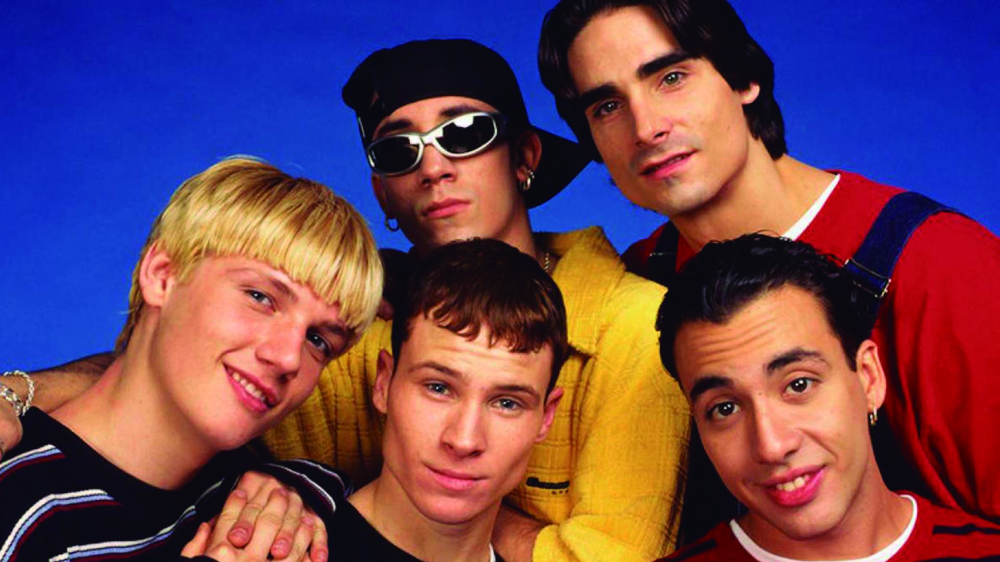
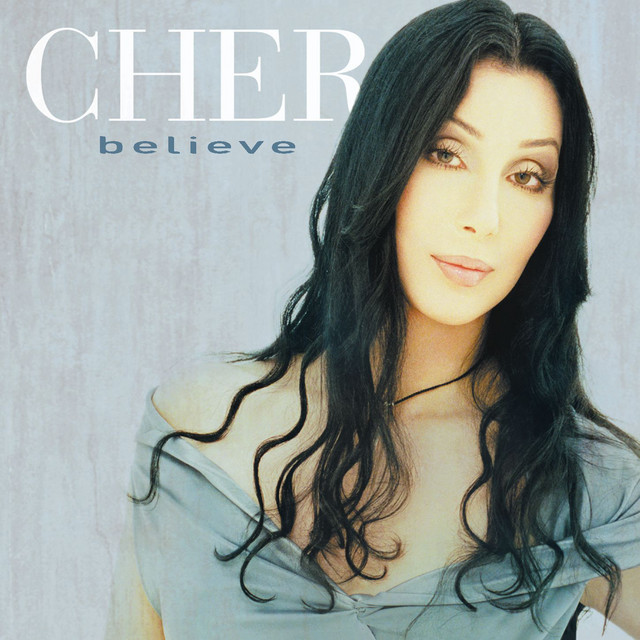
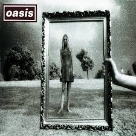
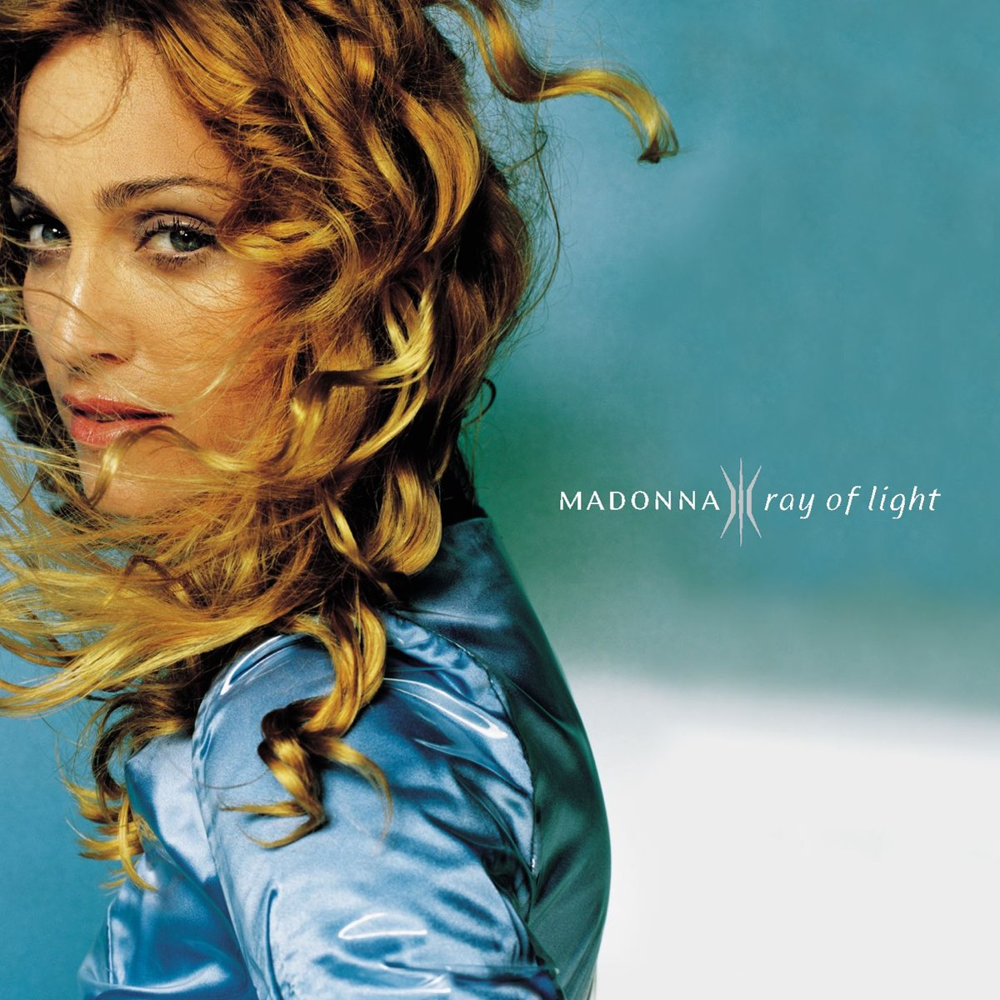
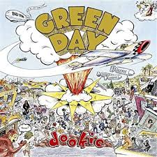
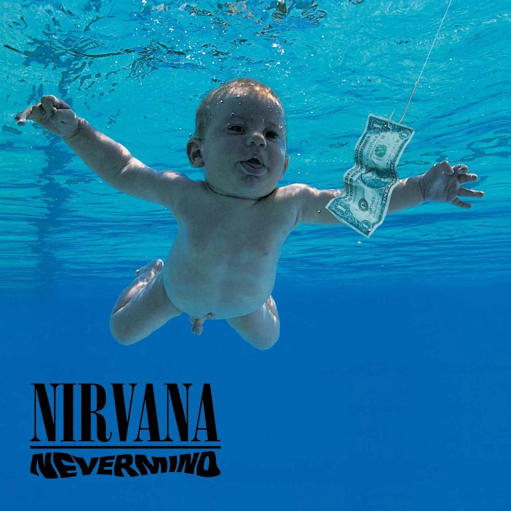

Personajes icónicos
Spice Girls: Spice Girls , grupo pop británico cuyas contagiosas canciones bailables dominaron las listas de éxitos mundiales a finales de los 90. Cultivaron un atractivo sexual juguetón bajo el lema del “Girl Power” para crear una alternativa feminista a las bandas de chicos de la época.

Backstreet Boys:Si hay que elegir una boyband de los 90, tienen que ser los BACKSTREET BOYS. Es una agrupación estadounidense de música pop, fue fundada en la ciudad de Orlando, Florida, el 20 de abril de 1993. La banda está integrada por A. J. McLean, Howie Dorough, Brian Littrell, Nick Carter y Kevin Richardson.
Withney Houston:Whitney Elizabeth Houston fue una cantante, compositora, productora discográfica, actriz, empresaria y modelo estadounidense, es una de las artistas musicales más vendidas de todos los tiempos. Whitney rompió los 90. En 1990 sacó su tercer disco y en el 91 dejó a todo el mundo loco cantando el himno en la Super Bowl.

Britney Spears:Britney Jean Spears es una cantante, compositora, bailarina y actriz estadounidense.Conocida como la «Princesa del Pop», Britney revolucionó el pop en el último momento.Se le atribuye haber influido en el resurgimiento del pop adolescente a finales de la década de 1990..
Canciones top que todos recordamos
“Losing my religion” (1991): R.E.M: Esta historia, que cuenta las “reflexiones de un personaje que se encuentra completamente perdido de fe y sin sentido en su vida”, se llevó dos Grammys. Además, fue el primer sencillo de su álbum de 1991 Out of time.

“La flaca”(1996): Jarabe de Palo: “Por un beso de la flaca / Daría lo que fuera / Por un beso de ella / Aunque sólo uno fuera”. Este fue el primer gran éxito de Jarabe de Palo (1996) y un tema que perdurará para siempre en la memoria colectiva.

“Believe” (1998): El tema, que se convirtió en el segundo sencillo más vendido de 1998, había estado guardado en un cajón durante años. “Lo que surgió de manera más accidental fue la voz metálica de Cher”.
“Wonderwall” (1995): Para mí, la mejor canción del repertorio de Oasis, lanzada en 1995, una canción llena de sentimiento, cargada de amor y melodías suaves que endulzan a cualquiera que la escuche.
Álbumes que marcaron una generación
“Ray Of Light” (1998) - Madonna: Madonna ha pasado por fases que han fijado su sonido y su estilo en distintas épocas, con Ray Of Light, Madonna dio un giro de 180 grados para centrarse en la espiritualidad y sorprendentemente, los temas que salieron de esa epifanía conquistaron a la crítica y al público.
“Dookie” (1994)- Green Day: La energía vibrante y juvenil del tercer álbum de Green Day sigue sonando tan bien ahora como entonces, prueba de que el disco ha resistido fenomenalmente al paso del tiempo con un conjunto de temas que son sencillamente impecables. .
“The Miseducation of Lauryn Hill” (1998)- Lauryn Hill: The Miseducation sigue siendo el único disco en solitario de Lauryn Hill. Un álbum de hip-hop, Motown y reggae cargado de emoción y alma, una artista decidida a acaparar los focos y a sincerarse por completo.

Nevermind (1991)–Nirvana: El grunge tuvo su cuota de lanzamientos maravillosos, pero fue este el disco que llegó a la habitación de todos los adolescentes. Un tracklist perfecto que incluye In bloom, Come as you are y Lithium.
